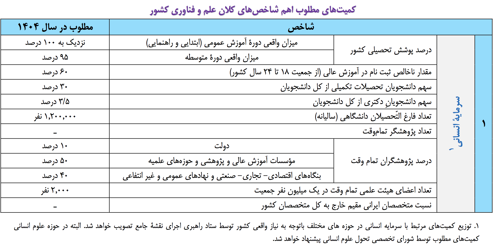

شبکه علمی چیست ؟
نقشه جامع علمی کشور
وضع مطلوب علم و فناوری
وضع مطلوب علم و فناوري بر مبناي وضع موجـود علـم و فنـاوري و تحليل نقاط قوت و ضعف و فرصتها و تهديدها كه در مجموعه اسـناد پشتيبان نقشه جامع علمي آمده تدوين گرديده است.
٢ - ١. چشــم انداز علــم و فنــاوری جمهــوری اســلامی ایــران در افـــق ١٤٠٤ هجــری شمســی
جمهوري اسـلامي ايـران در افـق 1404 هجـري شمسـي در علـم و فناوري، با اتكال به قدرت لايزال الهي و با احيـاي فرهنـگ و برپـايي تمدن نوين اسلامي- ايراني براي پيشـرفت ملـي، گسـترش عـدالت و الهام بخشي در جهان، كشوري خواهد بود:
- برخوردار از انسان هاي صالح، فرهيخته، سالم و تربيت شـده در مكتـب اسـلام و انقـلاب و بـا دانشـمنداني در طـراز برترين هاي جهان؛
- توانــا در توليــد و توســعه علــم و فنــاوري و نــوآوري و به كارگيري دستاوردهاي آن؛
- پيشتاز در مرزهاي دانش و فناوري با مرجعيـت علمـي در جهان.
٢ - ٢. اهــــداف کــــلان نظــــام علــــم و فنــــاوری کشــــور
- دستيابي به جايگـاه اول علـم وفنـاوري درجهـان اسـلام و احراز جايگاه برجسته علمي و الهام بخشي در جهان؛
- اسـتقرارجامعـه دانـش بنيـان،عـدالت محـوروبرخـورداراز انسانهاي شايسته و فرهيخته و نخبه بـراي احـراز مرجعيـت علمي در جهان؛
- تعميق وگسترش آموزش هاي عمومي وتخصصـي همـراه بـا تقويـت اخـلاق و آزادانديشـي و روحيـه خلاقيـت در آحـاد جامعه، به ويژه نسل جوان؛
- دستيابي به توسعه علوم و فناوري هاي نوين و نافع،متناسب با اولويت هــا و نيازهــا و مزيت هــاي نســبي كشــور؛ و انتشــار و به كارگيري آنها در نهادهـاي مختلـف آموزشـي و صـنعتي و خدماتي؛
- افزايش سهم توليد محصولات و خدمات مبتني بـر دانـش و فناوري داخلي به بيش از 50 درصد توليـد ناخـالص داخلـي كشور؛
- ارتقاي جايگاه زبان فارسي در بين زبان هاي بين المللي علمي؛
- كمك به ارتقاي علـم و فنـاوري در جهـان اسـلام واحيـاي موقعيـت محـوري و تـاريخي ايـران در فرهنـگ و تمـدن اسلامي؛
- گسترش همكاري در حوزه هـاي علـوم و فنـاوري بـا مراكـز علمي معتبر بين المللي.
٢ - ٣. اهـداف بخشـی نظـام علـم، فنـاوری و نـوآوری کشـور
- دستيابي آحاد جامعه به سطح مناسب دانش عمـومي و ازبـين رفتن بيسوادي؛
- پوشش كامل دوره آموزش عمومي؛
-
ايجاد نظام آموزشي مناسب براي هدايت دانش آموزان درجهت:
- كسب فضايل، شناخت مسئوليتها و وظايف در برابر خـدا، خود، جامعه و خلقت؛
- تقويت قدرت تفكر و خردورزي؛
- كسب آمادگي براي ورود بـه زنـدگي مسـتقل و تشـكيل خانواده؛
- حضور مسئولانه و مؤثر در نظام اجتماعي؛
- پرورش استعدادهاي علمي براي ورود به دوره تخصصي؛
- دستيابي به سطح دانش و مهارت نيروي كار كشور متناسب بـا معيار جهاني و در جهت پاسخگويي به نيازهاي جامعـه و بـازار كار داخلي و بين المللي؛
- كسب رتبه نخست در رتبه بندي دانشـگاه هاي جهـان اسـلام و احراز جايگاه شاخص در بين دانشگاههاي دنيا؛
- دستيابي به نسبت مطلوب تعداد دانشجويان تحصيلات تكميلـي به كل دانشجويان متناسب با سطح بندي دانشگاه ها و نيازهـاي كشور؛
- ارتقاء سطح مطلوب توليد علم در علوم انساني بر اساس مبـاني اسلامي و نيازهاي بومي؛
-
- علوم و فنـاوري هـاي حـوزه نفـت و گـاز بـه منظـور دستيابي به نقش محوري در منطقه؛
- فناوري اطلاعـات بـه منظـور كسـب جايگـاه اول در حوزه علم و فناوري در جهان اسلام؛
- فناوري زيسـتي بـه منظـور كسـب 3 درصـد از بـازار جهاني مربوطه؛
- فناوري هاي نانو و ميكرو به منظـور كسـب 2 درصـد از بازار جهاني مربوطه؛
- كسب دانش طراحي و ساخت نيروگاه هاي هسته اي،دسـتيابي به دانش انرژي گداخت و دستيابي به فناوري اعـزام انسـان بـه فضا و كسب دانش طراحي و ساخت و پرتاب ماهواره بـه مـدار زمين آهنگ (GEO)، با مشاركت جهـان اسـلام و همكاري هـاي بين المللي.
٢ - ٤. کمیـــت هـــای مطلـــوب اهـــم شـــاخص های کـــلان علــم و فنــاوری کشـــور
كميت هاي مطلوب اهم شاخصهاي كلان علم و فناوري كشور
